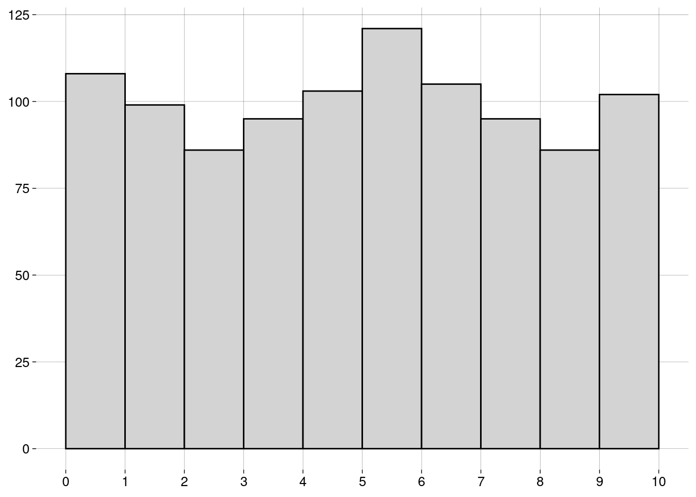

Capítulo 6 Medidas
6.2 Medidas de centralidade
6.2.1 Média
-
A média de uma população é escrita como \(\mu\), e é definida como \[\mu = \frac{\sum_{i=1}^N x_i}{N}\]
\(\sum_{i=1}^N x_i\) é a soma de todos os dados da população.
\(N\) é a quantidade de elementos na população.
-
A média de uma amostra é escrita como \(\bar x\), e é definida como: \[\bar x = \frac{\sum_{i=1}^n x_i}{n}\]
\(\sum_{i=1}^n x_i\) é a soma de todos os dados da amostra.
\(n\) é a quantidade de elementos na amostra.
O cálculo é essencialmente o mesmo. Só mudam os símbolos: \(N\) versus \(n\), e \(\mu\) versus \(\bar x\).
6.2.2 Mediana
Já aprendemos sobre a mediana na seção sobre boxplots.
A idéia é que, depois de ordenar os dados, \(50\%\) dos dados estarão à esquerda da mediana, e \(50\%\) à direita.
A mediana não é tão sensível a outliers quanto à média.
6.2.3 Moda
A moda é o valor mais frequente do conjunto de dados.
Pode haver mais de uma moda.
Não existe uma função para a moda em R base. Por quê?
Por incrível que pareça, é complicado definir a moda de forma a conseguir resultados interessantes.
-
Por exemplo, vamos definir um conjunto de \(1000\) valores numéricos distribuídos normalmente4, com média igual a \(5\) e desvio-padrão5 igual a \(2\):
normal <- rnorm(1000, mean = 5, sd = 2) -
O histograma dos nossos dados é

-
Vamos calcular a moda com a função
mfv(most frequent value), do pacotemodeest:## Registered S3 method overwritten by 'rmutil': ## method from ## print.response httr# Por causa de um bug na função mfv, # precisamos de números com ponto decimal # (em vez de vírgula): options(OutDec = '.') mfv(normal)## [1] -3.13046798 -1.25328423 -1.10285610 -1.05007554 -0.87632051 -0.27626267 ## [7] -0.13149651 -0.08565300 0.08005613 0.15724015 0.25122213 0.40053466 ## [13] 0.43537547 0.50984892 0.53885491 0.61798899 0.65151872 0.67067747 ## [19] 0.67398308 0.68756073 0.70817312 0.78980877 0.81176887 0.83206227 ## [25] 0.86418900 0.93308302 1.05066781 1.07256370 1.07776956 1.09122432 ## [31] 1.10398130 1.15231487 1.15564922 1.17634482 1.18961834 1.19817444 ## [37] 1.21570681 1.29374601 1.41161410 1.42861628 1.45543438 1.46072578 ## [43] 1.46699600 1.48730806 1.50881329 1.53349657 1.54746803 1.55632540 ## [49] 1.57408777 1.58754811 1.59479010 1.61678598 1.64152098 1.64911901 ## [55] 1.65045454 1.67004287 1.69703168 1.69995724 1.70029252 1.71024047 ## [61] 1.72067473 1.74669176 1.77049630 1.78049290 1.87188175 1.87687404 ## [67] 1.88964551 1.88996753 1.89206588 1.89773373 1.91111997 1.95931481 ## [73] 1.96264279 1.96783625 1.96853489 2.00626714 2.02581772 2.03485834 ## [79] 2.04491251 2.08576220 2.09026748 2.09786119 2.11929238 2.13636690 ## [85] 2.14259346 2.14736044 2.15263744 2.15692342 2.17009084 2.17439491 ## [91] 2.20506633 2.21208432 2.22257642 2.23362721 2.23945196 2.24570786 ## [97] 2.24672266 2.24987375 2.25955541 2.26030874 2.27639695 2.27908556 ## [103] 2.30561597 2.36899602 2.39598930 2.41844558 2.42016345 2.42112267 ## [109] 2.42659332 2.44637679 2.46976938 2.47534367 2.47875605 2.49753484 ## [115] 2.53279416 2.53864515 2.53894341 2.59582782 2.60361970 2.62031676 ## [121] 2.63644584 2.64456501 2.64910394 2.66393221 2.67816406 2.73505199 ## [127] 2.74305557 2.74777945 2.75123395 2.75613372 2.75771884 2.78676131 ## [133] 2.78919181 2.80715215 2.80717428 2.83302922 2.83332345 2.84777662 ## [139] 2.85824983 2.85951573 2.86070213 2.86221758 2.86646459 2.87694693 ## [145] 2.89072895 2.89144136 2.89314769 2.90755138 2.92753479 2.92866416 ## [151] 2.95382902 2.95957761 2.96136858 2.96745216 2.96989276 2.97715821 ## [157] 2.98729027 2.99715093 2.99923871 3.00239852 3.00549091 3.00812657 ## [163] 3.01700420 3.02409970 3.02700648 3.02992010 3.03385902 3.03595702 ## [169] 3.05970815 3.06004500 3.07436179 3.08326514 3.08600819 3.08871104 ## [175] 3.08912320 3.09007365 3.09164146 3.10807294 3.11178349 3.11253415 ## [181] 3.12758049 3.14499332 3.15552646 3.17762293 3.17944825 3.18577596 ## [187] 3.19700554 3.19949416 3.20368711 3.21782081 3.22397781 3.23402210 ## [193] 3.23643505 3.25379535 3.25516086 3.26970846 3.27908600 3.28582554 ## [199] 3.28847624 3.30132955 3.30394888 3.31773076 3.33396188 3.33499095 ## [205] 3.34164134 3.35040015 3.35097205 3.35350391 3.35871845 3.36617595 ## [211] 3.37242395 3.38289601 3.38847311 3.39015426 3.41509901 3.41525733 ## [217] 3.41566617 3.41709958 3.41894776 3.42073900 3.42336751 3.42717039 ## [223] 3.43622931 3.44578564 3.44880348 3.45523829 3.45558429 3.45694731 ## [229] 3.46235199 3.46837894 3.47111414 3.48082803 3.48181514 3.49021823 ## [235] 3.50465549 3.51360921 3.52535430 3.52775934 3.53118950 3.53590560 ## [241] 3.53908338 3.54222370 3.54754775 3.56734191 3.57070187 3.57620917 ## [247] 3.57817918 3.58165374 3.58764406 3.59375827 3.60645687 3.61583921 ## [253] 3.61754806 3.62267326 3.63091113 3.63306333 3.63417554 3.63897662 ## [259] 3.64023226 3.64908535 3.66389007 3.67253291 3.67494178 3.68007634 ## [265] 3.68802861 3.72651855 3.73503307 3.74069840 3.74549643 3.76143540 ## [271] 3.77463484 3.78012179 3.78248518 3.78337082 3.78615898 3.78865381 ## [277] 3.80472067 3.80617024 3.81534208 3.82097646 3.82906961 3.83206335 ## [283] 3.83238889 3.83278048 3.85178357 3.85548993 3.85773204 3.86522865 ## [289] 3.86598983 3.86671640 3.86696592 3.86812598 3.87165894 3.87398657 ## [295] 3.87549084 3.87798649 3.88174952 3.88240591 3.88240808 3.88279296 ## [301] 3.88325467 3.88403155 3.88617676 3.88722342 3.90274641 3.90841444 ## [307] 3.90993472 3.91091226 3.91788369 3.92460903 3.93447093 3.95042265 ## [313] 3.95098406 3.96261605 3.96691729 3.97484541 3.97884852 3.98553171 ## [319] 3.99136777 3.99765519 4.00921831 4.00964864 4.01392903 4.02437821 ## [325] 4.02538053 4.02558375 4.02658274 4.02951168 4.04355094 4.04379108 ## [331] 4.04801231 4.05172902 4.05298779 4.06327045 4.06541654 4.06691662 ## [337] 4.07052315 4.07208883 4.09314368 4.09372625 4.09699157 4.09743500 ## [343] 4.10060713 4.10082158 4.11024134 4.11197833 4.11302823 4.11457208 ## [349] 4.11521094 4.11928502 4.13803524 4.14061461 4.14077928 4.14755573 ## [355] 4.15210815 4.16601560 4.17755106 4.17758483 4.18635803 4.19628300 ## [361] 4.20026921 4.20633526 4.21502097 4.22358217 4.22477045 4.22851458 ## [367] 4.25901486 4.26744345 4.27110519 4.28736407 4.29263090 4.30637550 ## [373] 4.30742140 4.31484694 4.33313771 4.33511867 4.34946304 4.35211929 ## [379] 4.36304197 4.36395586 4.36612666 4.37529362 4.37530835 4.37904594 ## [385] 4.37982701 4.40454575 4.41513941 4.41706924 4.42311484 4.43149513 ## [391] 4.43307414 4.44206869 4.44273368 4.44908288 4.45288665 4.46458401 ## [397] 4.46864763 4.46932128 4.46975696 4.48634561 4.48781943 4.50015310 ## [403] 4.50743237 4.51221498 4.52634393 4.53106684 4.53678975 4.54195575 ## [409] 4.54319238 4.54424338 4.55811059 4.57109195 4.58247483 4.58574312 ## [415] 4.61255516 4.61369181 4.61890771 4.61939871 4.62052428 4.62110930 ## [421] 4.62786757 4.62869676 4.63254590 4.63589250 4.63934679 4.64041360 ## [427] 4.66428478 4.66484075 4.66774055 4.67019359 4.68569614 4.68581357 ## [433] 4.68930980 4.69309097 4.69372829 4.69567407 4.69791035 4.70312147 ## [439] 4.70562777 4.70679600 4.71447979 4.71635421 4.71654638 4.72346291 ## [445] 4.72868456 4.73858759 4.73903866 4.74145993 4.74488378 4.75006544 ## [451] 4.75201347 4.76445157 4.76962645 4.78626233 4.79387735 4.79424261 ## [457] 4.79873104 4.80318105 4.80762657 4.81039586 4.81197700 4.81555932 ## [463] 4.81684712 4.82139655 4.82416177 4.82468754 4.83296756 4.83668822 ## [469] 4.85143306 4.85279854 4.85646108 4.86424594 4.86784700 4.87616962 ## [475] 4.88152487 4.88945110 4.89728327 4.90136538 4.90222933 4.91226311 ## [481] 4.91447612 4.91584109 4.93301758 4.94193557 4.94271002 4.94412237 ## [487] 4.96119327 4.96336877 4.96880128 4.97591965 4.97615812 4.99289672 ## [493] 5.00029996 5.01429542 5.01918791 5.02710582 5.03571143 5.03757340 ## [499] 5.04775353 5.05506370 5.05640209 5.05701312 5.07001265 5.07031321 ## [505] 5.07500087 5.08383125 5.08816870 5.10061724 5.10187281 5.10673471 ## [511] 5.11280590 5.11351917 5.12072187 5.12467100 5.12874347 5.13266236 ## [517] 5.13313146 5.13701416 5.13769517 5.13917947 5.14481232 5.14862948 ## [523] 5.15547295 5.15640890 5.16311255 5.18269948 5.18880011 5.19795352 ## [529] 5.21362518 5.21630757 5.21712666 5.23337776 5.23705152 5.25201408 ## [535] 5.25872205 5.26681648 5.27695481 5.28537490 5.29694626 5.29914862 ## [541] 5.30058397 5.30522514 5.31343816 5.31375336 5.32426721 5.32734553 ## [547] 5.33251126 5.33901135 5.34666312 5.35064795 5.35108584 5.35593028 ## [553] 5.35951323 5.35999422 5.36003849 5.36037802 5.36911443 5.37362692 ## [559] 5.37501554 5.37854868 5.37951452 5.38423382 5.38950530 5.39021751 ## [565] 5.39470360 5.39589753 5.39638391 5.39689268 5.40570805 5.40580034 ## [571] 5.41137941 5.41742484 5.42646718 5.43028604 5.43106044 5.44185705 ## [577] 5.44456924 5.44577915 5.44676062 5.45127549 5.45274512 5.45433406 ## [583] 5.47182937 5.47226132 5.47336157 5.47961938 5.48045600 5.48113715 ## [589] 5.48247519 5.48674807 5.49064258 5.50332528 5.50388289 5.52203298 ## [595] 5.52365316 5.52582199 5.52628434 5.52661636 5.53108949 5.54536302 ## [601] 5.54892057 5.55016455 5.55110971 5.56037675 5.56122285 5.56549830 ## [607] 5.57472698 5.57793250 5.57894384 5.58632502 5.59830984 5.60669185 ## [613] 5.60773492 5.60884374 5.61770641 5.62878280 5.63382077 5.63469190 ## [619] 5.63981891 5.64095677 5.64128102 5.64233242 5.65030324 5.66076925 ## [625] 5.66366403 5.66756191 5.67111625 5.67767426 5.67824517 5.68280747 ## [631] 5.69022701 5.69901594 5.70622919 5.71950665 5.72583146 5.73388200 ## [637] 5.74239647 5.74332484 5.74727314 5.74820264 5.75499190 5.75500546 ## [643] 5.76913845 5.77097569 5.77809497 5.77853320 5.77906814 5.78676732 ## [649] 5.79743615 5.80714616 5.80926464 5.81994234 5.82106622 5.82126293 ## [655] 5.82569249 5.82975372 5.82997550 5.83102908 5.83206687 5.83678104 ## [661] 5.84032458 5.84171903 5.84507669 5.84633361 5.84955270 5.85581838 ## [667] 5.85824697 5.86300517 5.88135918 5.89491421 5.89986730 5.90276598 ## [673] 5.91242317 5.91978267 5.92661280 5.93071374 5.94195313 5.94267975 ## [679] 5.94544561 5.95661808 5.96396039 5.96730596 5.97712078 5.97782231 ## [685] 5.98370418 5.98549215 5.99197759 5.99215305 6.00359158 6.01584761 ## [691] 6.02743662 6.03280196 6.03789995 6.04071192 6.04282850 6.05494290 ## [697] 6.05578336 6.05657013 6.06523372 6.06791498 6.07317610 6.07705580 ## [703] 6.07982203 6.08836791 6.09193861 6.09713304 6.09775159 6.09868936 ## [709] 6.09991386 6.10678490 6.11780475 6.12121360 6.12347366 6.12771052 ## [715] 6.13133022 6.13428818 6.16423877 6.16573207 6.16833825 6.18093916 ## [721] 6.18112756 6.18248624 6.18769201 6.19681350 6.20119422 6.20202793 ## [727] 6.20318730 6.20408522 6.20468239 6.20894342 6.21236407 6.21427266 ## [733] 6.21559453 6.21902314 6.22161264 6.23328212 6.25123819 6.25647937 ## [739] 6.26101261 6.27223823 6.27647531 6.27712171 6.27887521 6.28563640 ## [745] 6.28643939 6.29348374 6.31210562 6.31216077 6.31307673 6.31338802 ## [751] 6.32375179 6.32896508 6.33061578 6.33235330 6.33348336 6.34001969 ## [757] 6.34907057 6.34980716 6.36619194 6.36956937 6.38022875 6.38121153 ## [763] 6.38313722 6.38472880 6.38990670 6.39093699 6.39645730 6.39925869 ## [769] 6.40395780 6.41621296 6.41891879 6.42082217 6.43312210 6.43394736 ## [775] 6.44624648 6.45889107 6.45928962 6.46776640 6.47079931 6.47476134 ## [781] 6.48246526 6.48885186 6.48905001 6.49101213 6.50120123 6.50424568 ## [787] 6.51397980 6.51829555 6.52801578 6.52939254 6.54057971 6.54110245 ## [793] 6.54794238 6.54907716 6.55081650 6.55100772 6.55886587 6.56712711 ## [799] 6.56752928 6.58219607 6.58893331 6.59196283 6.59820976 6.61061108 ## [805] 6.61474963 6.62066560 6.62144172 6.63892558 6.64557567 6.65653508 ## [811] 6.66528229 6.67882882 6.68762566 6.68984645 6.69497215 6.70468240 ## [817] 6.70817367 6.71857921 6.72383190 6.73291630 6.75213718 6.76400645 ## [823] 6.77253617 6.77525834 6.78004772 6.78756107 6.78941202 6.81301437 ## [829] 6.83595490 6.83696864 6.84674194 6.85046197 6.85521085 6.85718998 ## [835] 6.86503822 6.86709096 6.87263049 6.87325938 6.87496795 6.87737392 ## [841] 6.89042756 6.89304419 6.93490022 6.93637145 6.94322283 6.95138211 ## [847] 6.95388885 6.95784855 6.97444513 6.97453847 6.97636850 6.98010345 ## [853] 6.99792668 7.02220526 7.02482250 7.02809840 7.04525822 7.05842076 ## [859] 7.06291371 7.07358740 7.09359636 7.09725895 7.10670019 7.11453760 ## [865] 7.14332352 7.14333614 7.16579776 7.16870885 7.18130751 7.21026527 ## [871] 7.21488484 7.21843108 7.22239242 7.23157139 7.24120026 7.24769440 ## [877] 7.26712039 7.26943852 7.29346410 7.29998934 7.30092191 7.32240933 ## [883] 7.32339876 7.33808514 7.34028555 7.34434953 7.34725571 7.36284270 ## [889] 7.38370177 7.38736300 7.38759649 7.39154385 7.39342698 7.39431053 ## [895] 7.40149773 7.41181358 7.41879082 7.45243109 7.45613702 7.45902601 ## [901] 7.47562277 7.47856136 7.47999993 7.49162568 7.50627324 7.51849392 ## [907] 7.51989414 7.52788305 7.54607796 7.60835402 7.62142897 7.63064092 ## [913] 7.63364107 7.63550187 7.67742396 7.68631173 7.75008338 7.75027784 ## [919] 7.75187485 7.75197260 7.75638265 7.77153989 7.81092961 7.85311966 ## [925] 7.86326511 7.87831962 7.88509513 7.90576026 7.92281715 7.92329384 ## [931] 7.95297876 7.98738864 8.01725991 8.02534443 8.04305345 8.06613668 ## [937] 8.07411507 8.09529417 8.10104109 8.10907326 8.14295919 8.20577895 ## [943] 8.21261337 8.22059382 8.22061214 8.23960617 8.24411138 8.25656934 ## [949] 8.26861378 8.28665624 8.32250379 8.33715945 8.37045450 8.39825661 ## [955] 8.40835153 8.41218156 8.41988099 8.42001388 8.43121296 8.47353416 ## [961] 8.49278221 8.56136811 8.57164089 8.60757007 8.61167754 8.61310583 ## [967] 8.61549507 8.61650953 8.63418420 8.64346169 8.67782259 8.77683907 ## [973] 8.77902195 8.79606042 8.81628249 8.81638188 8.82839453 8.83600378 ## [979] 8.89249701 8.90543303 8.91166356 8.92156598 8.92936796 8.96128175 ## [985] 8.99680283 9.12281328 9.15433438 9.31257954 9.36007584 9.37137457 ## [991] 9.42955138 9.45759865 9.46514068 9.51048060 9.84848944 10.18575207 ## [997] 10.49170185 10.60290907 10.98726742 11.41229952# Voltamos para a vírgula como separador decimal: options(OutDec = ',') O que houve?!
O problema é que não há valores repetidos no conjunto de dados! Por isso, todos os \(1000\) valores são modais.
-
Uma maneira de evitar isto é definir a moda como o centro do intervalo mais curto que contém metade dos dados. Usamos a função
mlv(most likely value):moda <- mlv(normal, method = 'venter') moda## [1] 5,101654 -
Esta moda estimada pode nem estar no conjunto de dados:
moda %in% normal## [1] FALSE Mas o resultado de
mlv()é útil, pois nos diz que, embora não haja valores repetidos, valores próximos de \(5\) são mais frequentes, como mostra o histograma.
6.2.3.1 Exercícios
-
Arrendonde os valores no vetor
normalpara \(2\) casas decimais e ache a(s) moda(s)com a função
mfv, ecom a função
mlv, usando o métodoventer.
Considerando o histograma, qual das respostas você prefere? Por quê?
6.3 Formas de uma distribuição
- A forma do histograma mostra aspectos importantes da distribuição dos dados.
6.3.1 Distribuição Uniforme
-
Se o histograma tem todas as barras aproximadamente da mesma altura, dizemos que a distribuição é uniforme:
 A distribuição uniforme não tem moda, já que todos os valores têm aproximadamente a mesma frequência.
6.3.2 Simetria
Se o histograma for simétrico (i.e., os lados esquerdo e direito são “espelhados”), dizemos que a distribuição é simétrica.
A distribuição normal do exemplo acima é simétrica.
A distribuição uniforme também é simétrica.
-
Para distribuições simétricas, a média, a mediana e a moda (quando existe e é única) são bem próximas.
-
Uma distribuição pode ser simétrica, mas ter duas (ou mais) modas diferentes:

Algumas distribuições não são simétricas, mas têm uma cauda longa à esquerda ou à direita.
Dependendo da cauda, as distribuições são chamadas de assimétricas à esquerda ou assimétricas à direita.
-
Um exemplo: receitas anuais (em milhões de dólares) de CEOs de grandes empresas:
## Rows: 500 ## Columns: 9 ## $ Rank <dbl> 1, 2, 3, 4, 5, 6, 7, 8, 9, 10, 11, 12, 13, 14, 15, 16… ## $ Name <chr> "John H Hammergren", "Ralph Lauren", "Michael D Fasci… ## $ Company <chr> "McKesson", "Ralph Lauren", "Vornado Realty", "Kinder… ## $ `1-Year Pay ($mil)` <dbl> 131,190, 66,650, 64,405, 60,940, 55,790, 51,525, 50,1… ## $ `5 Year Pay ($mil)` <dbl> 285,020, 204,060, NA, 60,940, 96,110, 100,210, 90,300… ## $ `Shares Owned ($mil)` <dbl> 51,9, 5010,4, 171,7, 8582,3, 21,5, 47,3, 128,2, 155,8… ## $ Age <dbl> 53, 72, 55, 67, 59, 57, 55, 59, 61, 60, 59, 56, 63, 5… ## $ Efficiency <dbl> 121, 84, NA, NA, 138, 36, 12, NA, 91, 131, 150, NA, 1… ## $ `Log Pay` <dbl> 8,117901, 7,823800, 7,808920, 7,784902, 7,746556, 7,7… -
Vamos usar apenas os nomes e os valores anuais:
-
Um histograma:
salarios %>% ggplot(aes(x = valor)) + geom_histogram(breaks = seq(0, 150, 2.5)) + scale_x_continuous(breaks = seq(0, 150, 10)) + labs(y = NULL)
É uma distribuição assimétrica à direita: a maior parte dos CEOs têm receitas anuais “baixas”, de menos de \(10\) milhões. À medida que examinamos valores maiores, a quantidade de CEOs vai diminuindo lentamente.
Observe que a longa cauda à direita “puxa” a média para um valor mais alto do que a mediana.
-
A moda, que corresponde à barra mais alta do histograma, é menor que a mediana (e que a média):
sumario <- salarios %>% summarise( moda = mlv(valor, method = 'venter'), mediana = median(valor), media = mean(valor) ) sumario -
Em um boxplot, também é possível detectar a assimetria pela grande quantidade de outliers em um extremo:
salarios %>% ggplot(aes(y = valor)) + geom_boxplot() + scale_x_continuous(breaks = NULL) + scale_y_continuous(breaks = seq(0, 150, 10))
Com distribuições assimétricas à esquerda, a situação se inverte: a média é menor que a mediana, que é menor que a moda.
6.4 Re-expressão
Muitas vezes, é recomendável transformar a escala dos dados para que uma distribuição assimétrica se torne simétrica.
-
No exemplo das receitas dos CEOs, podemos tomar os logaritmos dos valores, em vez dos valores:
salarios_log %>% ggplot(aes(x = log_valor)) + geom_histogram(bins = 20) + labs( x = TeX('$\\log_{10}$ valor'), y = NULL )## Warning: Removed 3 rows containing non-finite values (`stat_bin()`).
O logaritmo de um número na base \(10\) é, essencialmente, a quantidade de dígitos do número, vista como uma grandeza contínua.
Logaritmos negativos vêm de valores entre \(0\) e \(1\).
Logaritmo zero vem do valor \(1\).
Valores iguais ou menores que zero não têm logaritmo definido.
-
Por isso a mensagem de aviso sobre \(3\) valores removidos. São valores iguais a zero:
Uma vantagem desta escala logarítmica é que podemos entender melhor o histograma. Os dados não estão amontoados de um lado só.
6.5 Medidas de posição
6.5.1 Quantis
Na seção sobre boxplots, falamos sobre quantis, que são medidas de posição.
-
Em R, a função
quantilecalcula quantis de um vetor:## 0% 25% 50% 75% 100% ## 0,00000 3,88500 6,96750 13,36125 131,19000 -
Você pode passar frações entre \(0\) e \(1\) para
quantile. Por exemplo, para calcular o primeiro, o quinto, e o décimo percentis6 das receitas dos CEOs:## 1% 5% 10% ## 0,48695 1,48405 2,19400
6.6 Medidas de dispersão
Tão importantes quanto as medidas de centralidade são as medidas de dispersão (ou espalhamento).
Elas informam o quanto os dados variam.
6.6.1 Amplitude
Uma medida simples é a diferença entre o valor máximo e o valor mínimo.
-
Lembrando do nosso exemplo das idades dos alunos:
idades## [1] 20 20 20 20 20 20 21 21 21 21 22 22 22 23 23 23 23 24 24 65 -
A função
rangeretorna o mínimo e o máximo:range(idades)## [1] 20 65 -
A amplitude destes dados é, então
## [1] 45 A diferença de idade entre o aluno mais novo e o mais velho é de \(45\) anos, um valor alto, por causa do velhinho.
6.6.2 IQR
Na seção sobre boxplots, também falamos sobre o intervalo interquartil (IQR).
-
No boxplot, é a altura da caixa. Para as idades dos alunos:
idades %>% as_tibble() %>% ggplot(aes(y = value)) + geom_boxplot() + scale_x_continuous(breaks = NULL) + scale_y_continuous(breaks = seq(20, 70, 5))
-
O IQR é a diferença entre o primeiro e o terceiro quartis:
summary(idades)## Min. 1st Qu. Median Mean 3rd Qu. Max. ## 20,00 20,00 21,50 23,75 23,00 65,00## [1] 3IQR(idades)## [1] 3 Ou seja, os \(50\%\) centrais dos alunos têm idade entre \(20\) e \(23\) anos, um IQR de \(3\).
É uma variação pequena, porém mais fiel à realidade do que a amplitude, que é alta por causa do velhinho.
Quanto maior o IQR, mais espalhados estão os dados.
6.6.3 Variância
-
Agora, vamos trabalhar com os pesos (kg) e alturas (m) de um time de basquete:
medidas <- tibble( altura = .025 * c(72, 74, 68, 76, 74, 69, 72, 79, 70, 69, 77, 73), peso = 0.45 * c(180, 168, 225, 201, 189, 192, 197, 162, 174, 171, 185, 210) ) medidassummary(medidas$altura)## Min. 1st Qu. Median Mean 3rd Qu. Max. ## 1,700 1,744 1,812 1,819 1,863 1,975summary(medidas$peso)## Min. 1st Qu. Median Mean 3rd Qu. Max. ## 72,90 77,96 84,15 84,53 89,10 101,25 A variância é a maneira mais usada de medir o espalhamento em torno da média.
Para calcular a variância das alturas e a variância dos pesos, precisamos calcular valores intermediários.
-
O desvio de um valor é a diferença entre o valor e a média. O desvio pode ser positivo ou negativo.
d_medidas <- medidas %>% mutate( d_altura = altura - mean(altura), d_peso = peso - mean(peso) ) d_medidas -
Vamos calcular o desvio médio das alturas e o desvio médio dos pesos:
Não foi uma boa idéia. O desvio médio sempre é igual a zero.7 (O R pode mostrar algum valor diferente de zero por causa da precisão limitada dos números de ponto flutuante.)
-
Como resolver isto? Elevando os desvios ao quadrado:
Agora temos os desvios quadrados, que são todos positivos.
-
O desvio quadrado médio vai ser a variância:
Uma vantagem da variância é que outliers (que têm desvios quadrados maiores) contribuem mais do que elementos próximos à média (que têm desvios quadrados menores).
Uma desvantagem da variância é que a sua unidade é o quadrado da unidade dos valores.
Neste exemplo, as unidades são \(m^2\) e \(kg^2\)!
6.6.4 Desvio-padrão
É melhor trabalhar com a raiz quadrada da variância, que chamamos de desvio-padrão.
-
As unidades são as mesmas que as unidades dos dados.
-
Claro que o R tem funções para calcular isso:
varesd(standard deviation):medidas %>% summarize( altura_var = var(altura), altura_dp = sd(altura), peso_var = var(peso), peso_dp = sd(peso) ) Mas os valores são diferentes dos que calculamos. Por quê?
6.6.5 Definições
-
Para uma população com \(N\) elementos e média \(\mu\), a variância é
\[ \sigma^2 = \frac{\sum_{i=1}^N (x_i - \mu)^2}{N} \]
e o desvio-padrão é
\[ \sigma = \sqrt{\frac{\sum_{i=1}^N (x_i - \mu)^2}{N}} \]
-
Para uma amostra com \(n\) elementos e média \(\bar x\), a variância é
\[ s^2 = \frac{\sum_{i=1}^n (x_i - \bar x)^2}{n-1} \]
e o desvio-padrão é
\[ s = \sqrt{\frac{\sum_{i=1}^n (x_i - \bar x)^2}{n -1}} \]
Nós calculamos a versão populacional destas medidas.
R calcula a versão amostral destas medidas.
Reveja os cálculos e entenda a diferença.
Note, também, que as medidas populacionais são representadas por letras gregas — \(\mu\), \(\sigma^2\), \(\sigma\) —, enquanto as medidas amostrais são representadas por letras latinas — \(\bar x\), \(s^2\), \(s\).
Mais adiante no curso, você vai entender por que o denominador da variância amostral é \(n - 1\), em vez de \(n\).
Nada é por acaso, nem mesmo em Estatística.
6.6.6 Exercícios
Quando a variância e o desvio-padrão de um conjunto de dados são iguais a zero?
-
Mostre que o desvio médio de qualquer conjunto de valores é igual a zero.
Ou seja, considere o conjunto
\[ \{x_1, x_2, \ldots, x_n\} \]
e prove que
\[ \sum_{i = 1}^n (x_i - \bar x) = 0 \]
Manipule apenas as variáveis \(x_i\). Não use exemplos, pois eles não provam o enunciado geral.
Dica: lembre que \(\displaystyle \bar x = \frac{\sum_{i = 1}^n x_i}{n}\).
6.7 Coeficiente de variação
Em um conjunto de dados, o desvio-padrão é uma medida importante da variação dos dados.
Mas a unidade do desvio-padrão muda de um conjunto de dados para outro: alturas em metros, pesos em quilos etc.
Podemos eliminar as unidades expressando o desvio-padrão em termos da média.
O resultado é a fração \(\frac{\sigma}{\mu}\) (na população) ou \(\frac{s}{\bar x}\) na amostra.
Esta fração é o coeficiente de variação (CV).
O CV não tem unidades.
-
Para as alturas do exemplo dos jogadores de basquete:
A média das alturas é \(1{,}82\) metros.
O desvio-padrão das alturas é \(0{,}09\) metros.
O CV é aproximadamente \(0{,}0473\).
statip::cv(medidas$altura)## [1] 0,04729982Em outras palavras, para as alturas, um desvio-padrão corresponde a \(4{,}73\%\) da média.
-
Para os pesos:
A média dos pesos é \(84{,}53\) quilos.
O desvio-padrão dos pesos é \(8{,}31\) quilos.
O CV é aproximadamente \(0{,}0983\).
statip::cv(medidas$peso)## [1] 0,09834649Em outras palavras, para os pesos, um desvio-padrão corresponde a \(9{,}83\%\) da média.
Segundo estes valores, a variação dos pesos é cerca de \(2\) vezes maior do que a variação das alturas.
O coeficiente de variação sempre faz sentido para dados do nível racional (veja a definição) — i.e., dados onde o zero é absoluto.
Para dados apenas intervalares, o uso do CV pode levar a conclusões absurdas, como você terá chance de ver no exercício.
6.7.1 Exercícios
-
Considere o seguinte conjunto de temperaturas (em graus Celsius):
celsius <- c(0, 10, 20, 30, 40) -
E as mesmas temperaturas (em graus Fahrenheit):
fahrenheit <- 9 * celsius / 5 + 32 -
Calcule para cada um dos dois vetores acima:
A média,
O desvio-padrão,
O coeficiente de variação.
As temperaturas são as mesmas (apenas em unidades diferentes), mas os CVs são diferentes. Por quê?
-
Agora, convertemos as mesmas temperaturas para a escala Kelvin:
kelvin <- celsius + 273.15 -
E para a escala Rankine:
rankine <- fahrenheit + 459.67 -
Calcule para cada um dos dois vetores acima:
A média,
O desvio-padrão,
O coeficiente de variação.
-
Compare:
As médias de
celsiusekelvin,As médias de
fahrenheiterankine,Os desvios-padrão de
celsiusekelvin,Os desvios-padrão de
fahrenheiterankine,Os coeficientes de variação de
kelvinerankine.
Explique o que houve.
6.8 Escores-padrão
Para qualquer conjunto de dados, a unidade usada é uma escolha arbitrária.
Para alturas, por exemplo, podemos usar metros, centímetros, pés, polegadas etc.
A escolha de unidades é tão arbitrária que podemos escolher uma unidade (que dificilmente vai ter nome) que faça com que a média do conjunto de dados seja zero e que o desvio-padrão seja igual a \(1\).
Isto equivale a tomar, como unidade, o desvio-padrão acima da média.
Os valores, nesta nova unidade, são chamados de escores-padrão.
Dizemos que os valores foram padronizados.
Vamos usar as alturas dos jogadores de basquete.
-
Para fazer a altura média virar zero, basta subtrair, de cada altura, a altura média:
alturas <- medidas$altura mean(alturas)## [1] 1,81875## [1] 0 -
Para fazer o desvio-padrão ser igual a \(1\), basta dividir estes valores pelo desvio-padrão dos dados originais:
sd(alturas)## [1] 0,08602656## [1] 1 -
Tome, por exemplo, o seguinte jogador:
altura <- alturas[1] altura## [1] 1,8## [1] -0,217956Faça as contas: o valor da altura padronizada deste jogador significa que a altura dele está \(0{,}217956\) desvios-padrão abaixo da altura média.
-
No geral:
Se a média for \(\bar x\), e
Se o desvio-padrão for \(s\),
Os escores-padrão \(z_i\) vão ser \[ z_i = \frac{x_i - \bar x}{s} \]
-
Em R, a função
scalefaz isso:medidas <- medidas %>% mutate(altura_padronizada = scale(altura)[,1]) medidas %>% select(altura, altura_padronizada)mean(medidas$altura_padronizada)## [1] -0,000000000000000004610683sd(medidas$altura_padronizada)## [1] 1 A função
scalefoi feita para receber e retornar matrizes. Como estamos trabalhando com vetores, usamosscale(altura)[,1]para tomar apenas a primeira (e única) coluna do resultado.
6.8.1 Exercícios
Por que, quando calculamos as alturas deslocadas divididas pelo desvio-padrão das alturas, temos certeza de que a média dos valores resultantes não mudou?
Padronize os pesos dos jogadores de basquete.
Confira a média e o desvio-padrão dos pesos padronizados.
Crie um scatterplot de peso por altura.
Crie um scatterplot de peso padronizado por altura padronizada.
Compare os dois scatterplots. O que muda de um para outro?
6.9 Teorema de Tchebychev
Grosso modo, quanto mais alto o desvio-padrão, maior é a distância da média até os valores.
Ou seja, quanto menor o desvio-padrão, maior é a proporção de valores que estão próximos à média.
-
O teorema de Tchebychev quantifica esta idéia:
Em qualquer distribuição, a proporção de valores dentro de \(\pm k\) desvios-padrão \((k > 1)\) da média é de, no mínimo \[ 1 - \frac{1}{k^2} \]
6.9.1 Exemplo
-
Lembre-se do conjunto de dados sobre os totais de horas de sono de diversos mamíferos:

-
Média e desvio-padrão:
media <- mean(df$value) media## [1] 10,43373dp <- sd(df$value) dp## [1] 4,450357 -
Qual a proporção de espécies que estão a \(1{,}3\) ou menos desvios-padrão de distância da média?
k <- 1.3 inicio <- media - k * dp inicio## [1] 4,648271fim <- media + k * dp fim## [1] 16,2192 -
O teorema diz que no mínimo a seguinte proporção das espécies está dentro deste intervalo:
proporcao_teorema <- 1 - 1 / k^2 proporcao_teorema## [1] 0,408284 -
Graficamente:

-
Vamos conferir:
## [1] 83## [1] 64proporcao_real <- especies_intervalo / total_especies proporcao_real## [1] 0,7710843 Como o teorema usa apenas a média e o desvio-padrão, e mais nenhuma informação sobre a distribuição dos valores — forma, simetria etc. — o que ele garante é, muitas vezes, mais fraco do que a realidade.
Neste exemplo, o teorema garantia no mínimo \(40{,}83\%\) das espécies a \(1{,}30\) ou menos desvios-padrão de distância da média.
A proporção verdadeira é \(77{,}11\%\) das espécies.
O teorema está certo (claro), mas, sem mais informações sobre a distribuição dos dados, o teorema não pode ser mais preciso.